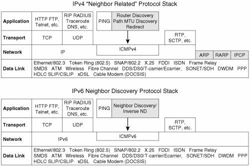
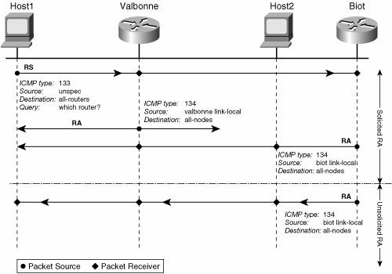
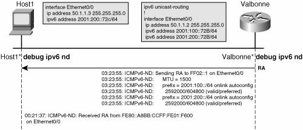
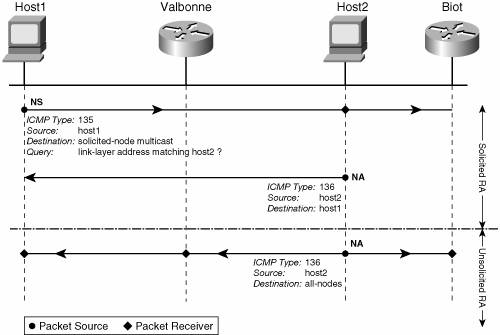
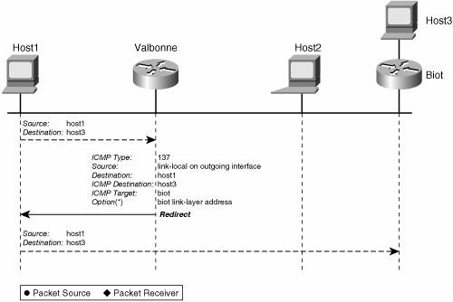
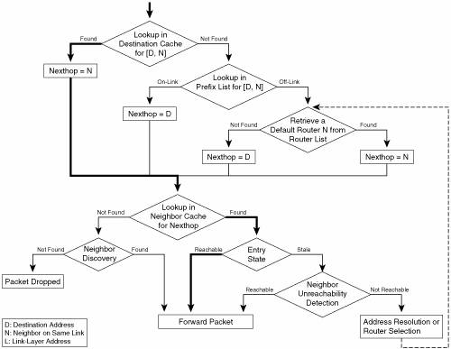
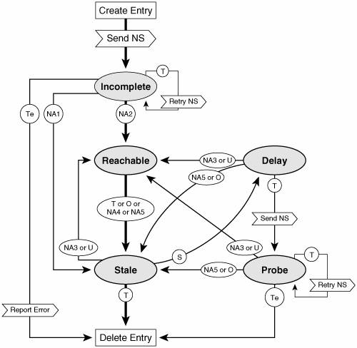

Neighbor Discovery ProtocolIPv6 Neighbor Discovery (ND) was first designed and published almost 10 years ago, as RFC 1970. It has been revised since then as RFC 2461, and a new version, focusing on fixes rather than revisions, is underway as RFC 2461bis. Some extensions have been described in Inverse Neighbor Discovery (RFC 3122), Default Router Selection (RFC4191), and Autoconfiguration (RFC 2462). In these 10 years, the focus of the Internet community has shifted significantly, and areas that did not get much attention, such as security and mobility, are now the focus of most of the efforts. This change of focus has led to a number of extensions, clarifications, and interactions described in various RFCs and Internet Drafts: Extension for Mobility in MIPv6 (RFC 3775), Security Features in Secure Neighbor Discovery (SEND) (RFC 3971), Detecting Network Attachment (DNA) (RFC 4135), Protocol for Carrying Authentication for Network Access (PANA) (RFC 4058), and Optimistic DAD (draft-ietf-ipv6-optimistic-dad). The IPv6 NDP provides a number of integrated key features for router and host operations, when attached to the same link. Some of these features, such as address resolution and redirect, are seen in IPv4, under specific distinct protocols such as ARP and ICMP Redirect, respectively. Other featuresfor instance, prefix discovery and neighbor unreachability detectionare new, although some could be achieved by other means with IPv4, too. Table 2-12 lists these features and their correspondence in IPv4.
NDP applies to both hosts and routers in different ways. Table 2-13 attempts to separate hosts and router roles, with regard to the preceding list of features.
One of the fundamental differences between IPv6 ND and its IPv4 counterpart suite of protocols (ARP, IPCP, and so on) is the positioning in the IP protocol stack. Although IPv4 same-link-related protocols are split between ARP/RARP, right above the link layer, and ICMP, running above IP, IPv6 ND is implemented entirely within ICMPv6. Figure 2-20 highlights differences between the protocol stacks. Figure 2-20. IPv4 and IPv6 Protocol Stack ComparisonThe reasons for the ND positioning within the stack are numerous, but if only one should be mentioned, it is simplicity. Why make address resolution (ARP and RARP in IPv4) a special case if this can be avoided? When within ICMP rather than next to IP, this feature can benefit from any service provided by IP, including security (Authentication Header), multicast, and so on. To secure the various functions in NDP, Secure Neighbor Discovery has introduced a set of specific ND options. They are used to protect NDP messages. Although this IPv6 refresher does not go into more detail about these options, you can refer to RFC 3971 for more information about SEND. Protocol Operations SummaryThe NDP enables each node on the link to perform ND, to build the knowledge necessary to make proper decisions when sending IPv6 packets to a neighbor. This knowledge represents a compilation of advertisements received from routers and nodes. These advertisements can be solicited or unsolicited. This information is stored on the following lists maintained by nodes:
To obtain the above information, the following messages are used in the NDP:
The positioning of NDP above IPv6/ICMP raises a couple of questions that deserve clarification. When the link-layer address matching a given destination address is not known, a node seeking that association has to send its query to a wider audience. In IPv4, this is done using MAC-level broadcasts. In IPv6, the node uses multicasts for this query. The multicast group used is the solicited-node (with link-local scope), as described in the "IPv6 Addressing" section. Note Note that after the link-layer address is known for a prefix, the neighbor query might be sent again, to confirm the association (IP address, link-layer address). In that case, the query is directly unicasted to the destination. Another issue arises when a node is using NDP to acquire its own address (see the section "Autoconfiguration"). It needs a source address to use for its query but has none yet. In such cases, it can use the IPv6 unspecified address (::) for the packet SA. Whereas address resolution messages are sent to the solicited-node multicast address (with link-local scope), other NDP messages are expected to reach all nodes or all routers. At the same time, the SA can be either a global or the link-local address of the sender: The latter is always preferred, to minimize the node's dependency on renumbering. Here is a list of all special addresses, sources, and destinations that a node can use in NDP exchanges:
Finally, two algorithms are leveraged by the IPv6 nodes to process the information gathered through NDP:
Comparison with IPv4IPv6 NDP provides a number of improvements over the corresponding IPv4 protocols, as follows:
Router and Prefix DiscoveryRouter discovery enables hosts to locate neighboring (on-link) routers and learn prefixes and parameters related to address configuration. Two messages have been defined for router and prefix discovery: the router solicitation (RS) message and the router advertisement (RA) message. Routers advertise themselves periodically (with a slight randomization to avoid synchronization, which could leave some time intervals with no routers being advertised) out of each interface by sending RAs. These unsolicited RAs are sent to the all-nodes "link-local scope multicast address" (FF02::1). In addition to providing the router address, RAs can contain useful information for hosts to perform next-hop determination, such as the following:
The RA messages can also be sent as a response to a query (RS) from a host. This option proves particularly useful in mobility, to accelerate autoconfiguration. These solicited RAs are sent either to the all-nodes address or to the unicast address of the host, which issued the RS. As the RS is soliciting a response from on-link routers, it is typically sent to the all-routers multicast group. Figure 2-21 shows the flow for a solicited and for an unsolicited RA exchange. Figure 2-21. Router Advertisement FlowNote In the case of a solicited RA, when the RS does not provide any IPv6 SA (typical for hosts that rely on RAs to autoconfigure themselves), the RA response is sent to all nodes. Figure 2-22 shows a simple example of a Cisco router (Valbonne) sending a periodic RA to a host (host1). The interface configuration is grayed, the NDP debugging is enabled, and the debug output is shown below the RA flow. Figure 2-22. Router Advertisement ExampleFigure 2-22 shows a debug trace interleaved with the RA flow. The show ipv6 routers command is used on a Cisco router to display RA information received from other on-link routers. Only the router sends RAs, and only the hosts install them in their database. So in the configuration in Figure 2-22, this command applies only to host1 (a Cisco router in host mode). Example 2-10 shows the output of this command. Example 2-10. Host Perspective of Advertised Routers.
Address ResolutionThe neighbor solicitation and neighbor advertisement packets are used to perform several critical node operations:
DAD and NUD are described in next sections. ND link-layer resolution provides a similar service to ARP in IPv4, although using a slightly different method. Two ICMPv6 messages have been defined for IPv6 address resolution: the neighbor solicitation (NS) message and the neighbor advertisement (NA) message. The NS is the query and contains the target (queried) IPv6 address. The NA is the response and contains the link-layer address of the matching interface. When a node has concluded that a particular next hop or destination IPv6 address is on-link (see the section "Next-Hop Determination" later in this chapter), it sends out an NS on the identified link, to obtain the link-layer address matching the IPv6 address. The expected response is an NA. The NS is a multicast to the solicited-node multicast group, embedding the rightmost 24 bits of the queried IPv6 address. There are potentially multiple nodes subscribed to the same solicited-node multicast address, with the "owner" of that address being one of them. The owner will get the NS along with the other members of the multicast group, and answer with an NA. Note NDP is a nonreliable protocol. On most link types, this is fine, because the probability of "losing" a message, such as an NS or NA, is low. On wireless links, however, this may become an issue. In particular, DAD could conclude that an address is free to use, whereas in fact, the NA was lost. A host can also send an unsolicited NA. This could happen when the node wishes to inform the other nodes on the link about a change in their link-layer address. The unsolicited NA is sent to all-nodes multicast address. After the node has received the NA, the neighbor from whom it has been received is considered "reachable." Monitoring the reachability is the purpose of NUD. See the sections "Neighbor Unreachability Detection" and "The State Machine for Reachability" for details. Figure 2-23 shows the flow for the address-resolution process. Figure 2-23. Address-Resolution FlowOn Cisco routers, the association (layer 3 address, link-layer address) is stored in the neighbor cache. The command show ipv6 neighbor executed on each router lists the neighbor cache content. In Example 2-11, the biot neighbor cache has two entries that relate to router valbonne: 2001:200::72b and FE80::A8BB:CCFF:FE01:F600. They are listed in "reachable" state along with the corresponding link-layer address. Example 2-11. Example of IPv6 Neighbor Cache
Redirecting a Host to a Better Next HopRouters send redirect messages to inform hosts of a better next hop, whether another router or the final destination itself, should it be on-link. The IPv6 redirect mechanism is similar to the IPv4 redirect mechanism. Only one message, the redirect message, is necessary to achieve the redirect functionality. It contains the IP address that is a better next hop and the IP address of the destination that is redirected. If the link-layer address of the better next hop (R2) is known, it can be inserted in the redirect packet sent by the router (R1) issuing the redirect message. Note In theory, the previously described process could save an address-resolution exchange between the host and the router R2. In practice, the benefit may be limited. The router R2 is likely, at some point, to route some traffic back to the host. To do so, it will need to initiate an NS/NA exchange to determine the host link-layer address. This flow would have been unnecessary had the host initiated an address-resolution flow to find R2's link-layer address. The link-layer address of the initiator of the NS can indeed also be inserted, as an option, in the NS packet. Figure 2-24 shows the flow for the redirect message. Figure 2-24. Redirect FlowInverse Neighbor DiscoveryAs mentioned earlier, ND fulfills, for IPv6, the same functionality as ARP does for IPv4. In this context, similar reasons that drove an inverse-ARP protocol led to extensions to IPv6 ND called IPv6 Inverse Neighbor Discovery (IND). The details of this extension are specified in RFC 3122. The IPv6 IND enables a node to learn IPv6 addresses for which it knows the link-layer address. To achieve this, it sends solicitations and receives advertisements. The IND was originally developed for Frame Relay networks, but may also apply to other data-link technologies with similar behavior. Two messagesthe inverse neighbor discovery solicitation (INS) and the inverse neighbor discovery advertisement (INA)have been defined. The INS contains the source link-layer address and the target link-layer address (for which the sender expect to get an IPv6 address). The response (INA) contains the source link-layer address, the target link-layer address, and a target address list. It contains the list of one or more IPv6 addresses of the interface identified by the target link-layer address in the INS message that prompted the INA. Note that at the time of this writing, RFC 3122 is not supported on Cisco routers. Proxy Neighbor DiscoveryAn IPv4 node has the capability to proxy subnets for hosts that do not understand subnet (or are misconfigured) or default routers. This function is sometimes referred to as proxy-ARP and is specified in RFC 1027. IPv6 does not carry over that concept; instead, it requires IPv6 hosts to process RAs and to come up with a default router to which nonlocal traffic can be sent. Furthermore, proxying an entire subnet might be, for many systems, impractical. They could set the interface in promiscuous mode, or all-multicast mode, to receive all NSs, but, besides performance issues this potentially raises, not all systems support these modes. In some cases, however, it might prove useful for a router to act on behalf of nodes that are away from the link but want neighbors to believe they are not. A classical example is a mobile node that has moved off-link. To achieve this limited proxy address-resolution function, the router just has to register to the solicited-node multicast addresses it wants to proxy and answer NSs on their behalf. Neighbor Discovery AlgorithmsA number of ND algorithms have been defined to describe the expected behavior of both hosts and routers in a variety of operational situations. The following subsections discuss these algorithms: Next-Hop DeterminationAs in IPv4, a node that needs to forward a packet must find out whether the destination is on-link or off-link. In the latter case, it must subsequently find an on-link neighbor (next hop) that can forward the packet to the destination. Finally, it has to resolve the on-link destination address, or the on-link next hop, into a link-layer address. Unlike IPv4, a destination (or next hop) can be on-link, without the forwarding node having a prefix matching the destination address. An address will be considered on-link by a node if
The algorithm used to forward a packet is set fairly differently on hosts or routers. A router has a routing table and a neighbor cache (same as ARP cache for IPv4). The first one (the Routing Information Base, or RIB) contains next hops for a given destination match (longest match); the latter contains link-layer addresses for on-link nodes, either final destination or next hops. Cisco routers also have a forwarding table (Forwarding Information Base, or FIB), which takes the RIB one step further by pre-resolving recursive entries to accelerate the forwarding process. In routers, regular routing mechanisms take precedence over information obtained from neighboring routers via prefix discovery or router discovery mechanisms. Then NS/NA messages enable link-layer resolution. Example 2-12 shows the routing tables and the neighbors of a router in Figure 2-24. Example 2-12. Routing and Neighbor Information on an IPv6 Router
On hosts, on the other hand, no such thing as a routing table or routing protocols should be necessary. RFC 2461 describes a set of conceptual data structures to enable next-hop determination in hosts:
Figure 2-25 shows a host model of the next-hop determination algorithm, based on RFC 2461. Figure 2-25. Next-Hop Determination AlgorithmThe host first does a lookup into the destination cache, in case the destination of the packet has been seen recently. If so, the destination cache provides the next hop that was used (may be the destination itself), and a subsequent lookup into the neighbor cache is likely to provide the link-layer address. This path, shown in bold, will be the most exercised on an established flow. If the destination is not in the destination cache, it is searched in the prefix list (maintained from information received in RAs). As a last resort, a default router is selected, from among all on-link routers (known by sending RAs), via default router selection. Default Router SelectionAgain, this is a host-specific algorithm. Routers just rely on routing protocols (and routing tables) to make proper next-hop determinations. Unlike IPv4, a default gateway does not have to be defined on an IPv6 host. The procedure for a host to select a router as the next hop for its traffic is described in the "Default Router Preference and More-Specific Routes" Internet Draft. It identifies three distinct types of hosts:
Note that hosts of different types, receiving the same RA packets (multicast on the link), might end up making different decisions when selecting a default router. Note As mentioned previously, each router on the link may advertise a list of prefixes as well as offer itself as the default router. A dual-homed host could potentially receive disjoint prefix lists from two or more routers, and pick up one prefix from one list for autoconfiguration, forming an SA. It could then use this address (selected using SAS) to leave the subnet, via the router (selected as the default router) that did not advertise the prefix used to form this address. Duplicate Address DetectionThe NS and NA messages are also used to perform duplicate address detection (DAD), as described in RFC 2462. DAD is performed on all unicast addresses prior to assigning them to an interface. The basic principle is that a node sends an NS to query about an IPv6 address ownership, and assigns the address to one of its own interfaces only if no NA was received for it. Optimistic DAD is proposing a modification of the existing IPv6 ND (RFC 2461) and stateless address autoconfiguration (RFC 2462) algorithms. The intention is to minimize address configuration delays in the successful case (the address chosen by the node is unique), and to reduce disruption as far as possible in the failure case. Optimistic DAD is only performed on automatically configured addresses. It is a useful optimization because DAD is far more likely to succeed than fail for a well-distributed random address or for an interface IDbased address constructed in the modified EUI-64 format from the unique MAC. Note DAD must not be performed on anycast addresses because by definition an anycast address can belong to multiple nodes. Neighbor Unreachability DetectionCommunication with a neighbor may fail for a number of reasons. If the path (on the link) to the destination has failed, recovery may be possible. The recovery mechanism to invoke when a failure has been detected differs depending on whether the neighbor is also the final destination. If it is, the address resolution should be re-initiated. Otherwise, a different next hop should be selected. This falls under the next-hop determination algorithm (explained in "Next-Hop Determination" section), where two mechanisms can be used. Routers typically use their routing table, whereas hosts run the router selection algorithm (see the "Default Router Selection" section). The neighbor unreachability detection (NUD), however, deals with detecting the failure. Reachability of a neighbor is obtained in two possible ways. The first method is a confirmation from an upper layer that communication is happening with this neighbor (for instance, received TCP packets acknowledging previously sent packets). The second method is the receipt of an NA as a response to an NS sent by the node looking for reachability confirmation. Any other methods, such as RAs, cannot be used to confirm reachability of a neighbor. A neighbor then remains reachable for a limited amount of time, unless new confirmations come in. If the confirmation is not received in a timely manner, the neighbor is considered unreachable, and recovery mechanisms take place. The complete state diagram for neighbor entries in the ND cache is detailed in the next section. The State Machine for ReachabilityThe neighbor cache maintains a list of neighbors to which traffic has been sent recently. Figure 2-26 shows a state diagram of the neighbor cache. Figure 2-26. ND Cache Entry State Diagram In Figure 2-26, the following events will generate transition from one of the five states (INCOMPLETE, REACHABLE, DELAY, STALE, and PROBE):
The typical life of an entry is shown (in bold) in the state diagram of Figure 2-26. An entry is a mapping between an IPv6 address and a link-layer address. The entry is created INCOMPLETE (link-layer unknown), and an NS is sent to obtain the link-layer address. As soon as the response (NA) is received, the entry moves to REACHABLE state, and traffic can be forwarded. If the router sees no traffic for that neighbor for a certain period of time (typically 30 seconds), the entry moves to the STALE state. From there, it can either move back directly to REACHABLE (typically upon upper-layer reachability confirmation) or to DELAY (if a packet is to be sent to this neighbor), where a new NS is issued, or it can be deleted (in our example) after a certain amount of time in STALE (typically hours). AutoconfigurationThe address autoconfiguration is used to automatically assign addresses to a host. Address autoconfiguration is specified in RFC 2462. It uses the NDP (specifically RAs) to obtain the prefix to build an address on, and again ND (specifically NS and NA messages) to test that the built address is not already in use. The default mechanism for autoconfiguration is stateless. Another mechanism, stateful, can be used and is specified in RFC 3315. Both mechanisms are described in Chapter 3, "Delivering IPv6 Unicast Services," in the section "Host IPv6 Address Provisioning." Neighbor Discovery at a GlanceTable 2-14 summarizes ND information for quick reference.
IPv6 is not limited, in the least, to the protocols reviewed in this chapter. However, this chapter covered the fundamental elements, to provide you with the tools to understand the most relevant differences between IPv6 and IPv4. With these tools in mind, the next chapters review IPv6 network services, all built "on top of" IPv6 addressing, ICMPv6, and the Neighbor Discovery Protocol. |